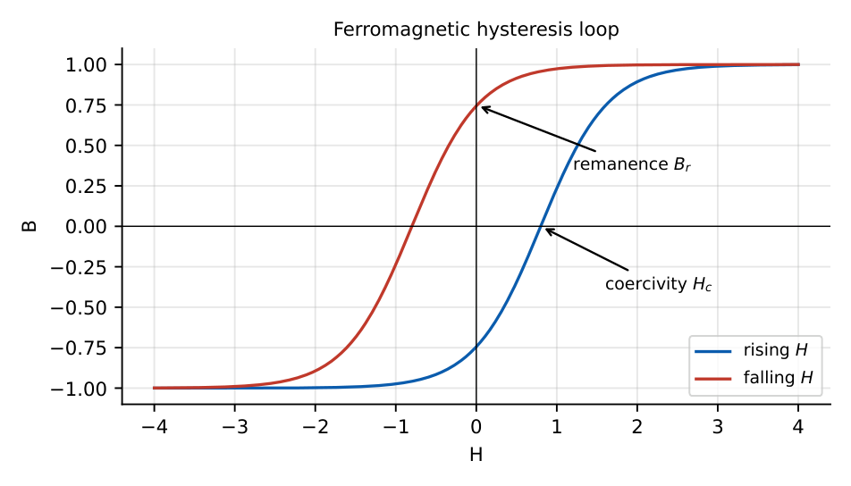

Magnetostatics, Inductance and Faraday’s Law
In this chapter
Biot–Savart and Ampère’s law for standard current geometries, magnetic boundary conditions and materials, inductance of solenoids and coaxial lines, energy, and Faraday’s law (transformer and motional emf).
3.1 Biot–Savart law
\(d\vH=\dfrac{I\,d\mathbf l\times\ar_R}{4\pi R^2}\) (A/m), \(\ \vB=\mu\vH\) (T). Force law: \(\mathbf F=q(\vE+\mathbf u\times\vB)\), \(d\mathbf F=I\,d\mathbf l\times\vB\).
Infinite straight wire: \(B=\dfrac{\muz I}{2\pi\rho}\) (direction \(\ar_\phi\), right-hand rule). Circular loop of radius \(R\) at its centre: \(B=\dfrac{\muz I}{2R}\); on its axis at distance \(z\): \(B=\dfrac{\muz IR^2}{2(R^2+z^2)^{3/2}}\). Finite wire seen at angles \(\alpha_1,\alpha_2\): \(B=\frac{\muz I}{4\pi\rho}(\sin\alpha_2-\sin\alpha_1)\).
Two parallel wires carrying currents in the same direction attract with force per unit length \(\frac{\muz I_1I_2}{2\pi d}\).
3.2 Ampère’s law
\(\oint\vH\cdot d\mathbf l=I_{enc}\ \Leftrightarrow\ \grad\times\vH=\vJ\) (statics). Magnetic flux is conserved: \(\oiint\vB\cdot d\mathbf S=0\Leftrightarrow\grad\cdot\vB=0\) (no magnetic monopoles).
Solenoid (long, \(n\) turns/m): \(B=\mu nI\) inside, \(0\) outside. Toroid (\(N\) turns, mean radius \(r\)): \(H=\frac{NI}{2\pi r}\). Coaxial cable: \(H=\frac{I}{2\pi\rho}\) between the conductors, \(0\) outside. Inside a wire of radius \(a\): \(H=\frac{I\rho}{2\pi a^2}\).
\(B\) at \(5\,\)cm from a \(10\,\)A wire: \(\frac{4\pi\times10^{-7}\times10}{2\pi\times0.05}=40\,\mu\)T. A solenoid of \(1000\) turns/m at \(2\,\)A: \(B=4\pi\times10^{-7}\times1000\times2=2.51\) mT.
3.3 Magnetic materials and boundary conditions
\(\vB=\muz(\vH+\mathbf M)=\mu_r\muz\vH\), \(\mathbf M=\chi_m\vH\), \(\mu_r=1+\chi_m\).
| Class | \(\mu_r\) | Example |
|---|---|---|
| Diamagnetic | slightly \(<1\) (\(\chi_m<0\)) | Cu, Bi, water |
| Paramagnetic | slightly \(>1\) | Al, Pt |
| Ferromagnetic | \(\gg1\), nonlinear, hysteresis | Fe, Ni, Co |
| Ferrimagnetic (ferrites) | large, low conductivity | MnZn, NiZn ferrite |

Normal \(\vB\) is continuous: \(B_{1n}=B_{2n}\). Tangential \(\vH\): \(H_{1t}-H_{2t}=K\) (surface current); \(K=0\) gives \(H_{1t}=H_{2t}\). Refraction of flux lines: \(\tan\theta_1/\tan\theta_2=\mu_1/\mu_2\).
3.4 Inductance
\(L=\dfrac{\lambda}{I}=\dfrac{N\Phi}{I}\) (H), mutual \(M=\dfrac{\lambda_{12}}{I_1}\), \(M=k\sqrt{L_1L_2}\), \(0\le k\le1\).
Solenoid: \(L=\dfrac{\mu N^2A}{\ell}\). Toroid: \(L=\dfrac{\mu N^2A}{2\pi r}\). Coaxial (per unit length, external): \(L'=\dfrac{\mu}{2\pi}\ln\dfrac ba\). Two-wire line: \(L'=\frac{\mu}{\pi}\ln\frac dr\).
Energy \(W=\tfrac12LI^2=\tfrac12\iiint\vB\cdot\vH\,dV\); energy density \(w_m=\tfrac12\mu H^2\). Series coupled coils \(L=L_1+L_2\pm2M\).
3.5 Faraday’s law
\(\mathrm{emf}=\oint\vE\cdot d\mathbf l=-\dfrac{d\Phi}{dt}\ \Leftrightarrow\ \grad\times\vE=-\dfrac{\partial\vB}{\partial t}\) (Lenz: the induced current opposes the change). \(N\) turns: \(-N\,d\Phi/dt\).
General: \(\mathrm{emf}=\underbrace{-\iint\frac{\partial\vB}{\partial t}\cdot d\mathbf S}_{\text{transformer}}+\underbrace{\oint(\mathbf u\times\vB)\cdot d\mathbf l}_{\text{motional}}\). A rod of length \(\ell\) moving at \(u\perp B\): emf \(=Bu\ell\).
\(N=50\) turns, \(\Phi=0.1\sin(100t)\) Wb: \(\mathrm{emf}=-50\cdot10\cos(100t)\), peak \(500\) V. Rod: \(\ell=0.5\,\)m, \(u=4\,\)m/s, \(B=0.2\,\)T: emf \(=0.4\) V.
(i) \(\vH\) of a wire falls as \(1/\rho\) outside but rises linearly inside the conductor. (ii) \(\vB\) is zero outside an ideal solenoid but not outside a short coil. (iii) Normal \(\vB\) (not \(\vH\)) is continuous. (iv) Faraday’s law needs a changing flux; a steady flux through a stationary loop induces nothing. (v) Mutual inductance \(M\le\sqrt{L_1L_2}\).
Use symmetry first: Ampère’s law with an Amperian circle for wires/coax, a rectangle for solenoids. \(L\) of an \(N\)-turn coil scales as \(N^2\). For emf questions differentiate the flux: \(\Phi_{peak}\cdot\omega\cdot N\).
3.6 GATE problems
Q1. \(B\) at \(5\,\)cm from an infinite \(10\,\)A wire is (A) \(4\,\mu\)T (B) \(40\,\mu\)T (C) \(400\,\mu\)T (D) \(4\) mT.
Q2. \(\grad\cdot\vB=\) (A) \(\rho_v\) (B) \(\mathbf J\) (C) \(0\) (D) \(-\partial\vB/\partial t\).
Q3. Faraday’s law states that the induced emf is (A) \(d\Phi/dt\) (B) \(-d\Phi/dt\) (C) \(\Phi\,dt\) (D) \(-\Phi/t\).
Q4. At an interface with no surface current, which is continuous? (A) \(H_n\) (B) \(B_t\) (C) \(B_n\) (D) \(D_t\).
Answers: Q1 (B). Q2 (C). Q3 (B). Q4 (C): also \(H_t\).
Q5. A long solenoid has 1000 turns/m and carries \(2\,\)A. \(B\) inside is (A) \(2.5\) mT (B) \(0.25\) mT (C) \(25\) mT (D) \(2.5\) T.
Q6. Circular loop of radius \(10\,\)cm carrying \(5\,\)A. \(B\) at its centre is (A) \(3.14\,\mu\)T (B) \(31.4\,\mu\)T (C) \(314\,\mu\)T (D) \(62.8\,\mu\)T.
Q7. A \(50\)-turn coil links flux \(\Phi=0.1\sin(100t)\) Wb. Peak emf is (A) 5 V (B) 50 V (C) 500 V (D) 5000 V.
Answers: Q5 (A). Q6 (B): \(\muz I/2R=4\pi\times10^{-7}\cdot5/0.2\). Q7 (C).
Q8. Inductance (\(\mu\)H) of an air solenoid with \(N=500\), \(\ell=0.5\,\)m, \(A=2\,\mathrm{cm^2}\): .
Q9. Energy (J) stored in a \(2\,\)H inductor carrying \(3\,\)A: .
Q10. Motional emf (V) of a \(0.5\,\)m rod moving at \(4\,\)m/s perpendicular to \(B=0.2\,\)T: .
Answers: Q8: \(\muz N^2A/\ell=4\pi\times10^{-7}\cdot250000\cdot2\times10^{-4}/0.5=125.7\,\mu\)H. Q9: \(9\). Q10: \(0.4\).
Q11. Which statements are true? (A) Diamagnetic \(\mu_r\) slightly below 1 (B) paramagnetic \(\mu_r\) slightly above 1 (C) ferromagnets show hysteresis (D) ferromagnetic \(\mu_r\) is independent of \(H\).
Answers: Q11: (A), (B), (C).
T1. \(H\) inside a coaxial cable between conductors? T2. Energy density in a magnetic field? T3. What does the hysteresis loop area represent?
Answers: T1: \(I/2\pi\rho\). T2: \(\frac12\mu H^2\). T3: energy loss per cycle per unit volume.
- Wire \(B=\frac{\muz I}{2\pi\rho}\); loop centre \(\frac{\muz I}{2R}\); solenoid \(\mu nI\).
- Ampère: \(\oint\vH\cdot d\mathbf l=I\); \(\grad\cdot\vB=0\).
- \(B_n\) and (if \(K=0\)) \(H_t\) continuous.
- \(L=\mu N^2A/\ell\); \(W=\frac12LI^2\); coax \(L'=\frac{\mu}{2\pi}\ln\frac ba\).
- emf \(=-N\,d\Phi/dt\); motional emf \(=Bu\ell\).